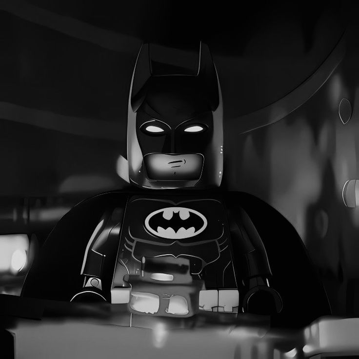
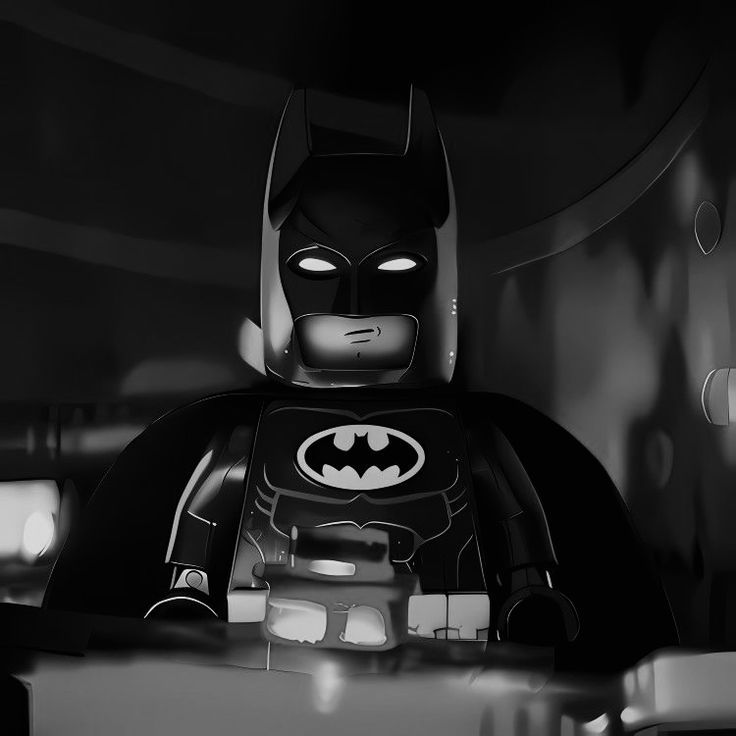

Origen de batman:
El joven Bruce Wayne fue un niño privilegiado, criado bajo la atenta mirada de sus padres,
Thomas y Martha, en la alta sociedad de Ciudad Gótica. Alejado del lento descenso de la ciudad
hacia la corrupción y el caos, Bruce disfrutó de una infancia despreocupada con la promesa de un
futuro brillante y fácil, en el que el nombre y la fortuna de su familia le garantizarían que nunca
le faltaría nada.
Pero el destino intervino antes de que ese futuro se hiciera realidad. Una noche, tras salir los Wayne
de un cine en uno de los barrios más peligrosos de Gotham, fueron sorprendidos en un atraco que dejó a
Thomas y Martha muertos a tiros ante los ojos de Bruce. Huérfano de repente, Bruce quedó al cuidado del
mayordomo de su familia, Alfred Pennyworth, mientras luchaba por sobrevivir en un mundo donde las reglas,
tal como él las entendía, ya no tenían sentido.
Bruce convirtió lentamente su dolor en combustible para una obsesión que perduró por toda su vida.
En lugar de sucumbir a la autodestrucción, juró "luchar contra todos los criminales" por el resto
de su vida, para evitar que la tragedia que le ocurrió le sucediera a nadie más en Gotham. Inspirado
por los murciélagos que infestaban la propiedad de su familia y su miedo constante a ellos, adoptó
la identidad de Batman, el héroe de Gotham. llamado a la acción por el resplandor de la Batiseñal,
un reflector utilizado por su aliado, el Comisionado Jim Gordon del Departamento de Policía de Gotham,
Batman vela por sus dominios como un protector vigilante y un fiel Caballero Oscuro.
Caracteristicas:
- Batman no posee habilidades metahumanas. Depende de una disciplina física y mental que lo lleva al límite humano en fuerza, velocidad, agilidad y resistencia, superando a atletas olímpicos.
- Es considerado el mejor detective del mundo, utilizando la ciencia forense y su mente brillante para resolver crímenes complejos.
- Domina múltiples artes marciales (más de 127 estilos), incluyendo judo, taekwondo, boxeo y ninjutsu
- Es famoso por tener planes de contingencia (planes de contingencia) para cualquier situación, incluso para derrotar a miembros de la Liga de la Justicia.
- Utiliza el miedo como arma contra los criminales, apareciendo y desapareciendo a voluntad, a menudo usando su apariencia de murciélago para aterrorizar.
Historia:
Es un superhéroe ficticio de cómic creado por los estadounidenses Bob Kane y Bill Finger y propiedad de DC Comics.
Apareció por primera vez en la historia titulada «El caso del sindicato químico» de la revista Detective Comics N.º 27,
lanzada por la editorial National Publications el 30 de marzo de 1939.
A diferencia de los superhéroes, no tiene superpoderes: recurre a su intelecto, así como a aplicaciones científicas y
tecnológicas para crear armas y herramientas con las cuales lleva a cabo sus actividades. Se trata del personaje más
emblemático de DC Comics, junto con Superman.
Impacto Cultural:
Batman se ha convertido en un icono de la cultura popular, siendo reconocido en todo el mundo. La presencia del personaje se ha extendido más allá de sus orígenes en los cómics. sucesos como la «Batmanía» producto de la serie televisiva de 1966 masificó una imagen infantil y paródica respecto a los superhéroes y en específico hacia Batman. Luego, una segunda «Batmanía» ante el lanzamiento de la película Batman en 1989, y posteriormente una tercera gracias a la viral campaña publicitaria de la cinta The Dark Knight y la ultima pelicula The batman, llevado al personaje hasta el primer plano de la conciencia pública. Apareciendo en:
- Television
- Cine
- Animacion
- video juegos
Ficha tecnica

| Nombre | Bruce Wayne |
|---|---|
| Edad | 40-45 años | Estatura | 1,88m-1,95m | peso | 95kg |
| Primera aparicion | 30 Marzo 1939 |
Galeria:
.jpeg)
.jpeg)
.jpeg) 

.jpeg )
.jpeg)